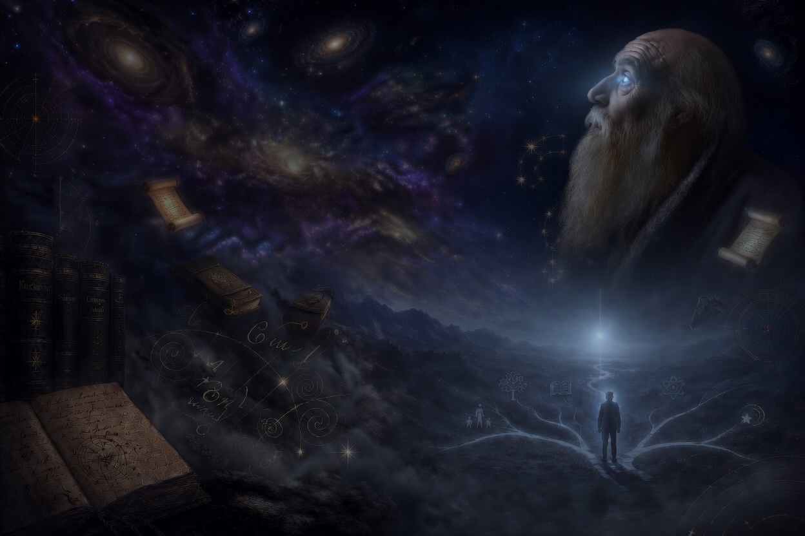
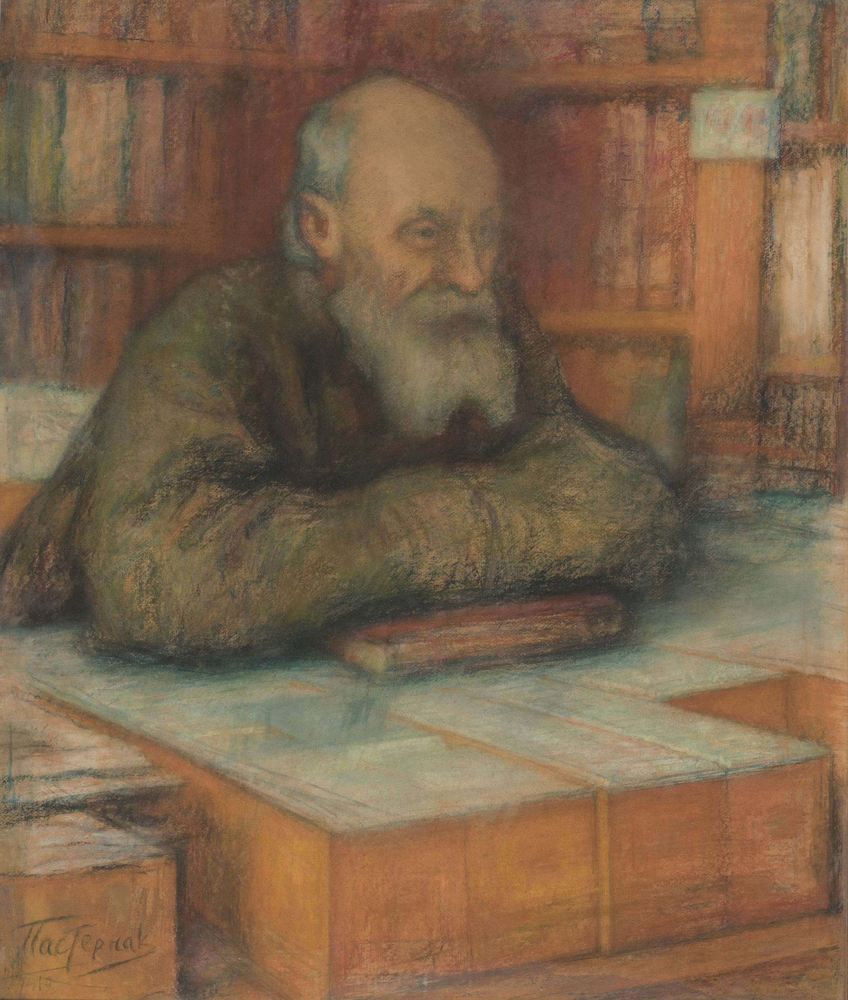

Николай Фёдорович Фёдоров — русский религиозный мыслитель, философ-космист, основатель учения об «Общем деле». Служил библиотекарем Румянцевского музея в Москве, никогда не публиковал своих работ при жизни, но оказал огромное влияние на Льва Толстого, Фёдора Достоевского, Константина Циолковского и многих других.
Главная идея Фёдорова: человечество должно объединиться ради победы над смертью и воскрешения всех умерших поколений. Наука, культура и техника — не самоцель, а инструмент этого «Общего дела».
Подробнее о философии Фёдорова →Этот опрос — не экзамен и не проверка знаний. Это приглашение к размышлению. Сравните свои взгляды с идеями Фёдорова и русских космистов о жизни, памяти, науке и будущем человечества. Ваш голос поможет понять, насколько эти идеи актуальны сегодня — и какими мы видим завтрашний день.
Расскажите о себе (по желанию)
Можно пройти опрос анонимно
Нет правильного или неправильного ответа. Выбирайте то, что ближе вам по ощущениям.